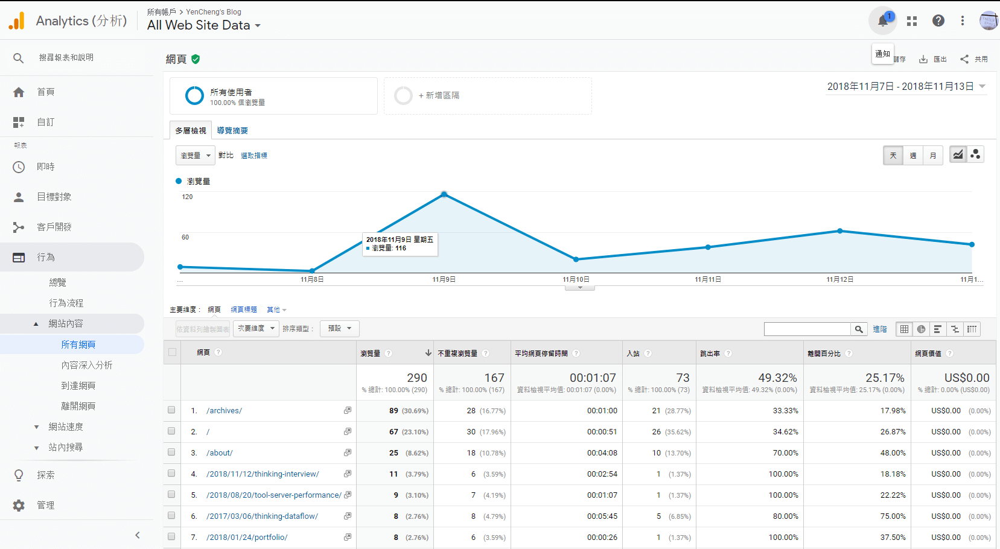

職涯的下一步
最近兩份工作都在新創上班，回想當時會想進去众社企，是因為有著年輕厲害的同事們，尤其在行銷還有公共關係上(連結 1、連結 2)，也因為前老闆交際圈的關係，不時會有外國人來實習，也有請像是 Dearbnb 的創辦人來分享，可惜的是在還沒來得及被影響到的情況下，普遍我們都被時間追著跑，追趕著接案的時程、上線的時程，後來共同創辦人決定離開出國進修、技術長也因為生涯規劃離開，接著是另外一位前端同事想停下工作休息一段時間也離職了，最後負責連 carry 大家坐我隔壁台大的學長也在尾牙後離開了。
再來是現在的公司，老闆是個佛心來著的教育家，人在北部但卻很神奇的把辦公室設在南部，但我也發現公司設立在南部的缺點，新創找人本來就不容易，加上如果又選在南部的話，相對大公司同樣的成本卻只能找來二流的人力。這樣不僅很可能會花很多時間在培養員工，而且在小團隊中，合作也會是最大的問題。問題在於本來每個人追求的就不相同、受訓練的背景不同、步調不同，可是我們卻像是需要一起划龍舟的隊友，在這一條像是小龍舟的新創公司中，需要努力朝向營利的目標前進，可是，當大家的目標沒有對齊，能力和步調沒有一致，這條船在運行上就很容易會有些意外發生。要推動大家自發性的把事情做好，真的不容易。
其實慢慢可以猜測或理解新創公司的流動率高的原因，到了新創也更體認到到如果員工是追求成長的，在看不到成長時就很容易出現想離開的念頭。不過最重要的事情對我而言是掌握住價值吧? 錢跟規定可以把人綁在座位上，但綁住了人，人也可以擺爛划手機、上班聊天打電動等等，難以產生創意和價值還有把工作做好的心，那，價值是什麼? 我認為這會是規劃職涯及選擇同事上的重要問題。所以這兩次面試都有問這樣的價值問題。
KKstream 面試心得
結果: 感謝信，原因大概是自己表現出只是早上空著想說就順便參加(實際上也是 Orz)，然後對於不舒服的面試感可能?也很直接反應在回問的問題上，能力也沒達到他們對效能的要求。
KKstream，感覺是個一言堂，主管主觀意識過強，說話的感覺令人不太舒服，開頭說是 HR 找來的(感覺其他人都沒事先看過履歷就決定讓人選來談看看，也可能這次是我臨時約的關係。)，另外面試到一半有看到其中一位資淺同仁因為過敏脖子跟臉都超紅，而且一直在抓，我想說可能需要休息，但主管對那個女孩子消遣的說一句她酒喝多了。(也可能是感情真的很好可以公開在陌生人面前這樣講 @@)，所以光是上面這些感覺，早知道就直接早上空著好好準備 Oath 的面試了。
技術問題: 抓兩個 request 之後比較兩個陣列中的資料並抓出不同的部分，我的答案被砲說，可能沒有看出這題我想問什麼，他們是從效能面來看，主管的答覆是如果可以平行可以發出越多 request 越好，其實這個解釋也是有點問題的? 因為 js 是單線程的語言，所以這個回答也不夠精確，不過大致上的意思就是換個寫法就可以不用等第一個有答案後才送二個，能夠越”接近”多工越好。比較好的方法，答案也許?是 Promise.all([])，提供了一個同時發出請求的函式，缺點可能是如果有其中一個要等很久，其他也會等很久。
1 | import _ from 'lodash'; |
1 | Promise.all([ |
印象比較深刻還有考了一個什麼時候要用 state，什麼時候要用 props，我按照自己的理解回答，大概講了一下資料流、狀態和性質的差異，我會看是不是需要共用或是跟其他元件連動，結果不算正解 QQ 然後我如果沒有反問的話，他們也不會說出他們認為的正解，最後主管如同上列回答，在意的是渲染的效能問題。
我理解上。目前大部分時候渲染的效能影響都不大，我們回到底層上來看，如果操作的 element 不多，頂多幾百毫秒的問題，在中小企業，還是偏好維護好交接為主，沒有必要為了幾毫秒去把結構或直觀的邏輯弄複雜。
白板題，一個陣列前三大數字乘積，主要是考排序，老實說因為最近一年都是在趕工，越來越依賴 lodash 也就越少動腦，這次突然要手寫算法類的 code 還真的頭腦一片空白，後來用了比較呆的方法做出來了，下午又遇到同樣的坑，最大的問題在要一邊被砲一邊想回答，一邊又需要切換回到寫程式的狀態，算法問題又還沒有熟練到肌肉記憶或反射的程度，所以表現都很慘烈，比起前年去群暉挑戰的時候退化很多。
工作方面，有詢問 coding style，得到的答案是不重要，IDE 可以處理，但有些其實無法 lint 出來，像是變數宣告位置，函式建議只留一個 return 這種整體版面感受的小細節。另外文件產出只會有部分跟必要的，但對於品質會有要求，時程可以再談。(聽主管講話的態度跟語氣聽起來我會翻譯成，你就做到我滿意為止 QQ)
最後問的是這階段選擇工作、同事上最重要的問題，詢問這份工作上最大的成長或是這份工作帶來的價值，主管的回答是我工作十年了你參考也沒用(好不舒服 QQ)，然後直接不回答把問題丟給才剛來三個月的菜鳥(這顯示出可能是一位不願意分享的主管，而且出問題就丟給菜鳥@@)，菜鳥在主管面前給的答案是，我才來三個月，不過都有學到東西，而且跟前一份工作比這裡當然是有比較滿意才過來。
Oath 面試心得
結果: 感謝信，原因自己覺得是平常沒有著重在這種簡單算法的練習，大多是做文件的閱讀及範例修改，一緊張就腦袋空白對基本的用法也還沒達到肌肉記憶，再來像是 cookies 這種沒在專案上用過的名詞，根本基礎及底層的操弄都不甚了解，事後有練習使用看看，也針對相關的設置去實作(點我看說明)。
另外一個失敗的原因，我事後有想到信中有提醒，在做解答前要先盡量跟大家解釋再開始進行，然後我一緊張就忘記這個部分，然後直接做的可能也沒有做出他們想要看的，這在短暫的面試中可能不是很好的一個表現，我們畢竟就是要快速交換訊息，明確快速地讓對方了解我們的程度。
後來 12 月的時候聽了 google 校園說明會，google 很聰明只辦在四所大學，也因為在南部工作的關係，所以就是參加母校的場次，當天請了軟體、硬體的工程師來分享面試要注意的小事情，結果提醒的就跟剛提到的一樣，面試或是工作上最重要的不是回答問題，而是澄清問題，澄清的概念是理解對方想知道什麼。若是無法在短時間內澄清，就需要先在心裡建立好一些限制跟路徑。
約女孩子來說，如果聖誕節拒絕，那跨年呢???(誤)，如果兩次都拒絕但生日當天可以，我們該做什麼樣的行動。澄清問題的時候也可以藉機了解我們能夠使用哪些資源，譬如女孩子喜歡看喜劇片還是恐怖片，再來是考慮特殊案例，譬如約妹結果定位好的餐廳剛好兩家都沒開，我們該怎麼處理? 火車或高鐵又剛好誤點，導致演唱會超過入場時間飯又沒吃怎麼辦? 總不能一次約會就因為這些特殊案例就爆了吧?
以軟體工程師來說，就是要確認能不能使用函式庫或是框架。接著行動也就是寫 code 的部分，這部分也不要急，應該先溝通想法，先把可能的做法說一遍，然後想一下有沒有更好的解法? 更好的評估方式可以用時間或是空間複雜度來評估，中小企業工作上，我覺得可以用易讀性和簡易的程度。接著當然是實作比較好的方法，簡單實作完畢後再來是考慮特殊案例，並且用特殊案例去測試， 在工作或面試的時候，用特殊案例去測一下程式，我想會是一個好的習慣。另外 google 本身是做搜尋引擎的，所以只要題目被搜到，那個題目就不會再出了。所以面試的時候，最重要的就是要表現出:
- 釐清問題: 問題越簡單越是需要去明確定義，譬如實作一個有最小值的 Stack，那問題就會是我需要連 Stack 都自己實做嗎? 還是只要做 min function 就好?
- 確認資源: 我是否可以用現有的 Stack lib 去實作?
- 確認預期成果: 可能會用暴力法，每次都全跑一遍，這樣一定可以，但是對方要的嗎?
- 評估實作方法: 如果可以用多個 Stack 能不能讓時間複雜度更低?
- 測試結果: 丟空值、或是資料中有 null 等等
其實面試通常很難給 100 分的回答，畢竟大部分的時間都在工作不是在準備面試，所以面試的時候就是把平常解決問題的方法表現出來，讓大家知道我們平常是怎麼在處理問題的，我覺得也不用刻意去演戲或是緊張，上次表現就是腦袋很常出現空白，也不知道為什麼? 大概是辦公室太豪華被嚇到，而且一進門就看到自己的名字顯示在報告的大螢幕上，有夠可怕。
回到 Oath 的面試，主要分兩部分，第一部分電話面試就問了很多基本題，HTML、CSS、JS 都有，目的大概只是防呆而已，然後 Onsite 的時候會直接請我們介紹目前做的專案，然後針對目前專案去做進一步的詢問(打臉)，這種感覺其實不錯就算這次沒有應徵上，也可以當作改進專案的參考，在以趕時間為主的新創公司來說，其實很多進階一點的部份我在實作上都沒有去仔細考慮，尤其在公司目前就是最有經驗的攻城獅，我沒想其他人大概也不會想 QQ 如果其他人跟我有一樣的困擾，其實還蠻推薦丟履歷過去被電一電的，花一個下午就會知道自己目前專案較不足的地方在哪裡，當作一個顧問時間也很棒。
過程大致是上四打一，會輪流問各自想問的問題，其中一個是用 react 寫一個自動完成輸入框的流程，這個我寫起來比較不需要思考，就只是寫元件而已。另外一個問題就是考算法類似機智問答，給一個陣列然後去除掉陣列中相同的部分，這方面我還是太弱了，蠻需要練習在閒聊模式之中實作這樣的問題，真的表現得很差，待加強。
1 | let items = [1, 3, 3, 3, 1, 5, 6, 7, 8, 1]; |
其他還有待加強的像是 cookies 的概念，以及資安相關的基礎知識。簡單的設定可以直接參考 express 的相關說明，但實際上是怎麼運作的就需要再去研究。
https://expressjs.com/zh-tw/advanced/best-practice-security.html
- Content-Security-Policy 標頭，以防範跨網站 Scripting 攻擊和其他跨網站注入。
- 移除 X-Powered-By 標頭。
- Public Key Pinning 標頭，來防範使用偽造憑證的中間人攻擊。
- Strict-Transport-Security 標頭，以施行安全的 (HTTP over SSL/TLS) 伺服器連線。
- X-Download-Options（適用於 IE8+）。
- Cache-Control 和 Pragma 標頭，以停用用戶端快取。
- X-Content-Type-Options，以阻止瀏覽器對脫離所宣告內容類型的回應進行 MIME 探查。
- X-Frame-Options 標頭，以提供 clickjacking 保護。
- X-XSS-Protection，以便在最新的 Web 瀏覽器中啟用跨網站 Scripting (XSS) 過濾器。
最後也是問一樣的問題，詢問這份工作上最大的成長、快樂、或是價值，得到覺得還蠻棒的答案，答案大概是這樣: “這只是我的想法，跟其他人可能不太相同，在這裡工作十年，也因為一些機會從 web 做到 ios app 現在又回到 app，商城、拍賣不同的商業邏輯也帶給我很多的學習和改變機會，也練習和很多不一樣的人合作，她說她遇到很多厲害的人都是說話讓人很舒服的。”
這方面我的想法也是這樣，以前的職涯教練、實習遇到的高階主管們、工作上遇到的總經理、董事長，大多給人一種舒服的氣場，做人最高的段數大概就是電人還讓人說謝謝，最後我還有問那她是怎麼推動大家一起工作的?(這就是我現在最想轉換工作的問題 QQ) 畢竟每個人的目標跟想要的不同，有什麼方法或手段嗎? 得到的答案是 “這屬於 soft skill，也就是她這幾年來大量跟不同人合作累積出來的。” 覺得這部分比較可惜的是無法方法論這樣的事情，但本職學能是攻城獅不是主管，這問題大概也很難給出有方法論的答案。
然後我覺得 HR 其實蠻專業的，雖然感覺年紀輕輕，但她可以在短時間內就確認我的問題(為什麼想在這時候看工作)、確認我目前有沒有其他的打算、理想的狀況(什麼時候可以報到)，也做了 deal 的提案，雖然我表面裝傻，但內心評估她簡直就是一個業務來著，當 HR 簡直委屈了，但如果當作她是在銷售這個職缺的話，其實也蠻稱職的。
MIT jobs 快速面試
Gogoro 跟 iKala 快速面試，一分鐘迅速交換了一下規格，速度交代踩過的坑，針對這些坑簡單問有鑑別度的問題，不過公司好像都是派工程師或是 HR 出來，可以說是一個人臉投履歷的概念，如果人就在台北其實不妨去參加看看，如果真的錄取了還會有到職獎金。兩家公司問題共同點都是快速介紹 react，有什麼好處和壞處，那為什麼不選擇 Vue?
iKala 後來有出了一個高鐵查詢 SPA 的作業，我在這星期三交出去了，但上周末剛好都有排活動，只好速度找了些時間做，覺得沒有做得很好，有些問題也是事後才發現，他們目前感覺需要會寫測試的人進去，這次的練習我也發現元件的測試好像沒那麼好寫，尤其在用了特殊一點的函式庫後，花了兩個晚上都看不出頭緒。
事後對方很有誠意的邀請面試，但我研究了各方資料，加上長期有在發樓執行長，所以其實這次作業做完內心有點心虛，於是先暫停了面試流程，想準備好了再上!!!
小結
面試前要練習寫一些機智問答，在閒聊的模式底下練習。盡可能了解下一份工作自己最想要的是什麼? 在面試的時候旁敲側擊或是單刀直入去看公司能不能給。比較特別的是大家都有稍微看一下部落格來快速了解面試者，從 google analytics 可以看出來那天點擊量爆炸多的。

喜歡這篇文章，請幫忙拍拍手喔 🤣